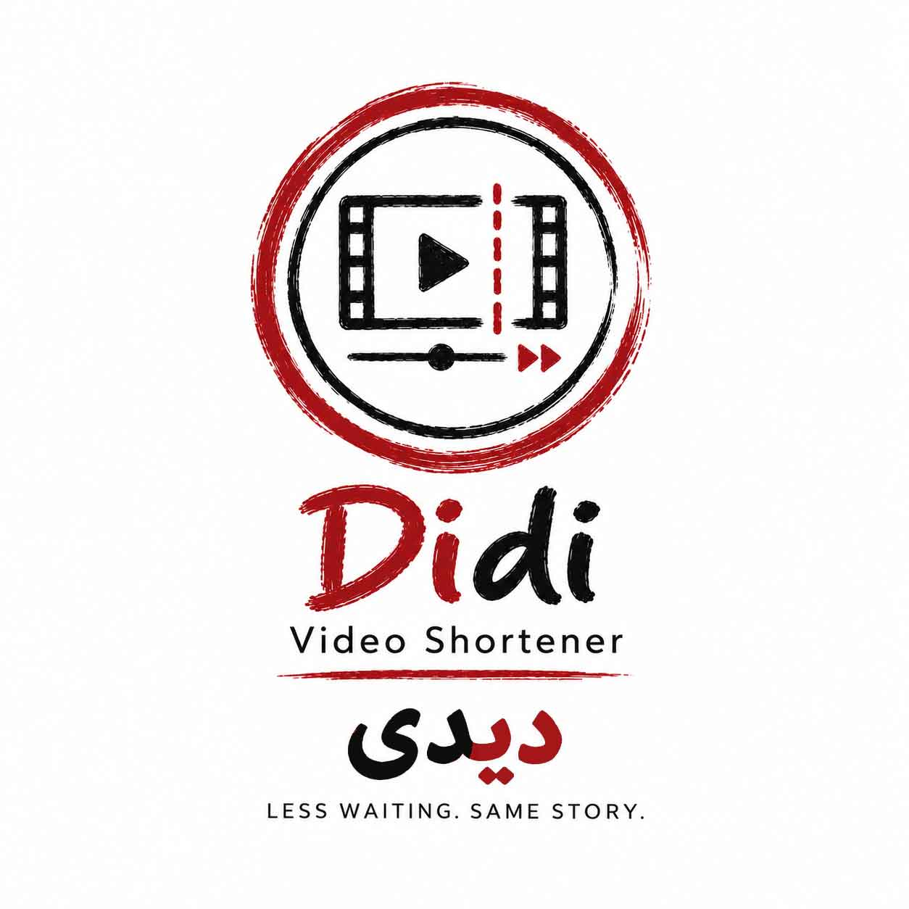

شنوبین | Shenobin
اگر به ساختِ موزیک علاقهمندید و برای دانشِ تئوری موسیقی نیاز به راهنمایی دارید؛ شنوبین اینجاست!
نسخهٔ وب ↗کد منبع ↗ابزارها و تجربههای دیجیتال در زمینهٔ موسیقی، نوشتن، طراحی و فناوری.
اگر به ساختِ موزیک علاقهمندید و برای دانشِ تئوری موسیقی نیاز به راهنمایی دارید؛ شنوبین اینجاست!
نسخهٔ وب ↗کد منبع ↗
ابزاری برای ساخت استوری یا شورتس ویدیو؛ با قابلیت افزایش سرعت لحظات آهسته به صورت خودکار.
نسخهٔ وب ↗کد منبع ↗
ابزاری برای تمرین حروف فارسی و طراحی فونت. دفترچهیِ قابل به چاپ برای تمرین خط هم میدهد!
نسخهٔ وب ↗کد منبع ↗
یادگیریِ عملیِ تئوری موسیقی؛ برای ساز گیتار! اینبار به صورت یک آزمایشگاهِ تعاملی، و روشی آسان!
نسخهٔ وب ↗کد منبع ↗
ترجمهای آنلاین و متفاوت از یک کتابِ خوب و مرجع، در رابطه با تاریخ اعداد؛ و از زبان یک معلم.
نسخهٔ وب ↗کد منبع ↗
ترجمهیِ کتابِ چادهی ابریشم؛ که به صورتِ آنلاین در این پروژه منتشر میشود، معجزهای با نامی ناصحیح!
نسخهٔ وب ↗کد منبع ↗
یادداشتبرداری از راه وب یا خط فرمان، با ذخیرهٔ محلی نوشتهها. صرفا جهت تفریح، یادگیری و مرورِ کُد!
نسخهٔ وب ↗کد منبع ↗